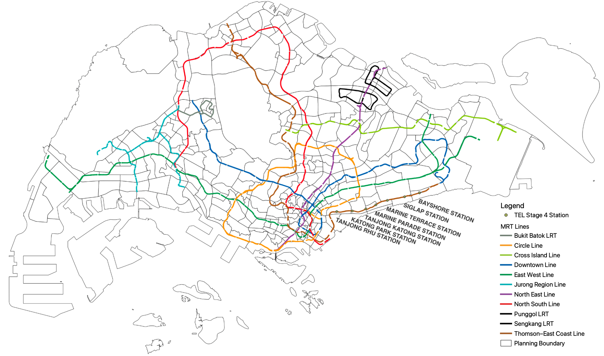

Project Overview
A report published by the Singapore Department of Statistics (2020) has shown an increase in ridership, travelling time and distance across all types of public transport in Singapore, possibly leading to increased traffic congestion or breakdowns of public transport systems. Accessible and effective public transportation is essential to enable the thriving economy of the urban-dense, fast-paced island nation. This is why good planning of mass public transport systems like the Mass Rapid Transport (MRT) system is so important.
Most recently, the development of the Thomson East Coast Line (TEL) has been a crucial part of Singapore’s plan to enable 4 in every 5 households to live within a 10-minute walk of a train station 1. There have also been plans to expand the island wide cycling network to about 700 km by 2030 2. Our team will measure, analyse, and evaluate the effectiveness of the proposed Stage 4 TEL stations and the implementation of a cycling path network in those areas.
The seven Stage 4 TEL stations we will analyse are shown below:

In addition to its much later opening in 2027 3, most residential areas near the Founders’ Memorial station are covered by buffer zones of the adjacent Tanjong Rhu MRT. We will thus exclude the TE22A Founders’ Memorial MRT station from our analysis.
Stages of analysis:
- Initial Data Exploration and Analysis
- Using OSM data (POIs and residential)
- Population data
- Buffer zones
- Data Extraction
- Aggregate demand from bus stop data
- OSM Road data
- Data Classification
- Manual labelling of OSM road layers for network analysis
- Creation of analysis layers
- Network analysis layer (QNEAT’s Iso Areas) for each MRT station
- Measuring demand from analysis
Our key findings
With improved cycling infrastructure such as bike lanes and bike parks, the value and accessibility of the MRT stations are increased significantly. We also note that with the extended reach of cycling expands over multiple MRT lines, which makes it possible for relevant authorities to consider investing in biking infrastructure, rather than MRT stations.
We urge the relevant authorities to consider investing higher in biking infrastructure to encourage a transport system that is sustainable, active, and affordable.